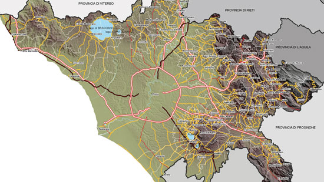

La storia romana detta anche storia di Roma antica narra le vicende che videro protagonista la città di Roma dalla mitica fondazione della città nel 753 a.C. alla caduta dell'Impero romano d'Occidente nel 476 d.C., anno con cui si indica l'inizio dell'epoca medievale.
Gli storici suddividono convenzionalmente la storia romana in tre grandi età:
Età regia: dal 753 a.C., anno della fondazione di Roma, al 509 a.C., anno della cacciata dei Tarquini da Roma
Età repubblicana: dal 509 al 31 a.C., data della battaglia di Azio, o dal 509 a.C. al 27 a.C. anno durante il quale il Senato di Roma conferì pieni poteri e il titolo di Augusto a Ottaviano
Età imperiale: dal 31 o 27 a.C. al 476 d.C., anno della deposizione di Romolo Augustolo, ultimo imperatore romano d'Occidente
